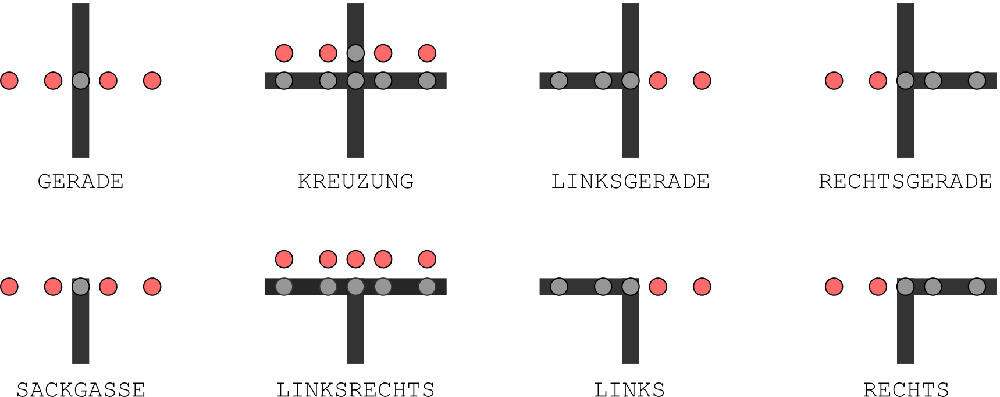

Erkennen von Kreuzungen

enum KreuzungsTypen {GERADE, LINKS, RECHTS, LINKSRECHTS, LINKSGERADE, RECHTSGERADE, KREUZUNG, WUESTE, UNTERBRECHUNG};
enum KreuzungsTypen bestimmeKreuzung(int pThreshold) {
lineSensors.readCalibrated(lineSensorValues); // Sensorwerte aktualisieren
bool linksSensor = lineSensorValues[0] > pThreshold; // links
bool mitteLinksSensor = lineSensorValues[1] > pThreshold; // links mitte
bool mitteSensor = lineSensorValues[2] > pThreshold; // mitte
bool mitteRechtsSensor = lineSensorValues[3] > pThreshold; // rechts mitte
bool rechtsSensor = lineSensorValues[4] > pThreshold; // rechts
if (!linksSensor && !rechtsSensor && !mitteSensor) {
return UNTERBROCHEN; //
}
else if(!linksSensor && !rechtsSensor){
rerturn GERADE;
}
else{
// Linker und/oder rechtes Sensor haben eine Linie erkannt.
// Ein Stück weiterfahren und überprüfen, ob es auch geradeaus geht.
/*
* Eigenen Code zum Bestimmen der verbleibenden Kreuzungstypen einfügen
*/
}
}